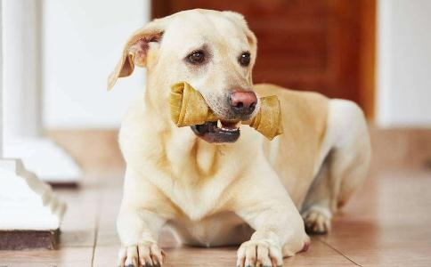

1、狗是人类的陪伴，文明社会不会把它当作食物，很多国家和地区立法保护 狗被人类驯养，成为人类的朋友，已有上万年的历史。在传统上，世界各国养狗都是看家和役使，如拉雪橇。现代社会的发展，狗的作用从看家护院转为陪伴，与人的关系越来越亲密，成为
举一个香港的例子：2006年11月12日，香港一男子将家养的两只狗淹死后，邀请另外三人到其家中烹饪狗肉，被邻居报警。他们还未吃到狗肉即被警方拘捕，11月22日四人被判入狱30天。因为，按照香港的《猫狗条例》规定，禁止宰杀猫狗用作食物，违反此条法规者罚款5000元及监禁6个月。2006年通过的《防止残酷对待动物条例》，对此项违法者最高刑罚提高至罚款10万元及监禁12个月。鉴于此四人无刑事记录，而且认罪良好，又为香港首宗宰狗入狱案件，法官从轻量刑，减为入狱30天。
2、吃狗肉是90年代商业大潮带动起来的泡沫，不是中国的传统饮食有人说吃狗肉是中国的传统饮食文化，这是没有根据的。过去，南方地区如广西、广东，还有东北某些地方的部分居民的确是有吃狗肉的“喜好”，一般农村也存在零星的吃狗肉现象，其原因是由于饥不择食，或者是个人的癖好。但是，全国各地不论城乡，狗肉的交易是不存在的，餐馆里几乎从来没有供应狗肉的，所以决不是我国固有的所谓饮食文化。我希望有人拿出实际的证据来否定我的这个结论。城市发展狗肉行业，狗肉出现在城市餐馆，是上世纪90年代伴随着市场经济大潮、公费吃喝风盛行，才有的吃狗肉之风的蔓延。
90年代我曾对中国的一些边远地区，如新疆、西藏、宁夏的少数民族是否吃狗肉的问题进行调查，结果都是否定的。我国的少数民族，历史上一直居住在边远地区，放牧和打猎是他们
所以，现在有人说狗肉是中国的传统饮食文化是毫无根据的。另一方面，文化是进化的，即使是传统文化也要加以区别。中国曾有妇女裹小脚和男人纳妾的传统，难道我们也要把这种传统文化保持下去吗？中国的饮食文化有许多是不好的，不是
市场和餐馆的狗肉是哪里来的？可以肯定地说，大多数的狗是盗窃或抢劫来的，而且许多是有组织的、集团式的暴力盗狗。毒狗的方法主要用剧毒氰化钾（俗称“三步倒”或“三步封喉”），少数也有用毒鼠强，或者肌肉松弛剂的。上世纪90年代，肉狗养殖场曾经一哄而起，1998年达到高峰，但由于狗的密集饲养易发生传染病流行死亡，得不偿失，现在大都已经关闭。狗也有从农村收购的，但数量极少。捕狗的方式常是团伙，用浸有毒剂的肉骨做诱饵，或用浸有毒剂的毒箭毒镖射狗，盗狗贼驾驶摩托车、小汽车抢劫，甚至采取暴力手段盗狗，形成盗狗——销售——餐馆一条黑链。
前些年浙江、广东都有报道对流入数以十吨计氰化物毒死的狗肉进行紧急追查的事件。如早在十多年前南方网就有详细的报道：“用剧毒氰化物毒杀的毒狗肉长期以来一直在源源不断地从江西、湖南等地流入广东韶关、河源、深圳、珠海、广州等地，记者跨越粤赣千里追踪毒狗肉销售一条龙惊人全过程。广东省卫生监督所仔细检验记者获取的毒狗肉样品和有关药物，证实不法分子用于毒狗的药物是纯度极高的氰化物，而从送检狗头的舌部验出了超过正常标准的氰化物。广东省卫生部门经检验证实记者送检狗肉含有超标氰化物。”其实食品中不存在氰化物“超标”的概念，而是任何食品都不应当检出剧毒的氰化物。
浙江省报道：2003年8月12日，10吨氰化物毒狗肉流出嘉兴，紧急追查悉数起获；2003年8月28日，宁波查封了11吨含氰化钾的“毒狗肉”；2007年1月30日，星岛环球网报道：“中国南方许多人喜欢吃狗肉，但如果在食肆吃到的狗肉是来自狗贼用毒药毒死偷来的狗可能会没命。广东惠州巿横沥镇在近几个月已有百多条家狗被毒死，将狗肉卖给餐馆图利。”
一狗贩子被捕后承认：“我卖的狗已经数不过来了，但是可以打包票，99%的狗都是毒死的。”一餐馆老板也坦白说：“现在供应的狗肉99%都是氰化钾毒死的，以及生病死亡的狗。但亦有少数是用剧毒鼠药毒死的狗。”
江苏常州市公安部门发现一起销售毒狗肉案，一餐馆老板说：“我们现在不太敢买狗肉，因为外面的狗基本上都是毒死的，万一客人吃出了问题怎么办？”
氰化钾属于一类A级无机剧毒品，吸入、口服或经皮肤吸收均可引起急性中毒，口服50～100毫克（即0.05～0.1克）即可引起致命。由于吃狗肉者只吃了毒狗肉的一小部分，吃进去的氰化钾不会立即引起中毒，使得一些人不在意。不过你愿意吃进氰化钾这种剧毒药吗，哪怕是很小的剂量？
① 2011年9月12日凌晨，湖北南漳县的父子二人骑摩托车在襄阳市襄城区卧龙镇云岫村偷狗，儿子用弩向狗射出毒箭时，因摩托车突然摇晃失衡，毒箭误伤了父亲的右胳膊，致使其父中毒身亡。
②央视新闻：狗贩子周某一直用剧毒针捕狗，贩卖给饭店等牟利。2012年7月22日，周某在上海嘉定街头用毒针捕杀小狗时被见义勇为的赵先生发现，争执中毒针插入赵先生头部，致其中毒身亡。嘉定区法院判处狗贩子周某有期徒刑2年6个月，赔偿赵先生家人110余万元。
③2012年12月29日，江苏镇江一青年骑摩托车用氰化物毒镖毒狗，不慎自己被毒镖所伤。警方将他及其同伙以涉嫌非法储存、使用危险物质罪刑事拘留。
④2009年1月20日《广州日报》报道：清远市旧城区就出现了用飞镖偷狗的事件，一只2岁大的花狗被飞镖射中后，忍痛回家，随即中毒死亡。
⑤合肥市《新安晚报》曾报道两起严重的毒狗事件：2002年12月7日安徽桐城市逮捕了3名销售含剧毒氰化物狗肉的犯罪分子，查获546只毒死的狗尸。他们制备含氰化钾的毒饵，发放给一些人去毒狗，然后廉价回收，送菜场销售。几年间他们卖出毒狗2000多只，获利数万元。这起案件的首犯被判处3年有期徒刑；2007年，合肥市肥东县农村发生一起案件：二小偷夜间用含氰化钾的毒饵把一农家的狗毒死了，正准备拖走时被主人发现，惊醒的村民一哄而起，乱棍之下把小偷打死了，造成一件命案。
⑥2003年12月16日《楚天都市报》报道：一人用毒鼠药毒死80只狗，卖到当地的餐馆，被判劳动教养1年半。提供毒鼠药的农民亦被捕。
上面所举的那么多事例足以证明，狗肉是一大食品安全问题，但是，为什么地方政府不管，还有那么多的人去吃？这能说是一个文明社会应该有的现象吗？
另一方面，狗肉是私货，未经任何食品检验程序，而未经卫生检疫的肉类及其制品的销售是严重违法的行为。目前的狗肉市场至少违反2009年《中华人民共和国食品安全法》第二十八条的下列三项：
（一）致病性微生物、农药残留、兽药残留、重金属、污染物质以及其他危害人体健康的物质含量超过食品安全标准限量的食品；（剧毒氰化钾毒死，残留量一定超标）
（二）病死、毒死或者死因不明的禽、畜、兽、水产动物肉类及其制品；
（三）未经动物卫生监督机构检疫或者检疫不合格的肉类，或者未经检验或者检验不合格的肉类制品；
北京市食品安全办有关负责人表示：有些餐馆直接屠宰猫狗的做法，违反了食品安全法中有关禁止销售未经卫生检疫的肉类及其制品的规定，属于违法行为。
4、吃狗肉有助于狂犬病的传播中国狂犬病疫区基本上都在南方农村，中国狗肉的消费地区主要在城市。狗肉消费与狂犬病的关系有以下三个方面：
一是吃狗肉造成农村养狗买卖增加，农村大量散放养狗与狂犬病发病率升高有密切的关系。
二是狗从农村收购或盗窃，运输到城市消费，这种运输存在传播狂犬病的隐患。根据《狂犬病防制法》《中华人民共和国动物防疫法》，应当禁止染疫、疑似染疫和易感染的动物、动物产品流出疫区，禁止非疫区的易感染动物进入疫区。狂犬病疫区的狗长途转运普遍，存在传播的危险。
越南的《兽医法规》（2004年）要求动物转运、进出口必须检疫，可是肉狗例外。2009年越南北部老街省发生狂犬病爆发，地方政府认识到肉狗运输可能导致狂犬病散播，于是发出禁令，停止肉用狗的运输和屠宰。
三是屠宰感染动物（狗、猫）以及处理肉类可能传染狂犬病，我国报告较早，最近越南和菲律宾报告较多，非洲的尼日利亚也有病例报告。巴基斯坦和俄罗斯还曾有剥患狂犬病牛或狐狸皮引起狂犬病的报告。
2007-2009年，越南报告屠狗和处理狗肉引起23例实验室确诊狂犬病人，他们没有被猫狗咬伤历史，但曾屠宰过狗猫。2007年，巴维地区发生狂犬病爆发，当地动物卫生局报告，30%狂犬病死亡者与屠狗有关。所以，越南防制狂犬病项目中，要求屠宰从业人员须接种狂犬疫苗。
5、破除吃狗肉的迷信 世界上有狗肉市场只有少数几个亚洲国家，其中主要在中国和韩国（韩国吃狗未合法化），菲律宾个别地区；越南发展市场经济开始吃狗肉，新加坡和日本等经济发达国家则不吃狗肉。中国和韩国吃狗肉的理由是壮阳、温补（狗肉属暖性，滋补）和增加身体热量。首先，狗肉暖性就属无稽之谈，而且，吃狗肉的季节中韩明显相反，中国人入冬（冬至）吃狗肉，韩国人则是夏天。如今广西玉林地区也提倡
再说，狗肉的营养并不比其它肉类好些。根据中国预防医学科学院营养与食品卫生研究所的《食物成分表》记载：每100克狗肉的蛋白质含量比瘦猪肉、牛肉和羊肉低20%，所产生的热量也较低。狗肉火锅之所以吃了热乎乎，是因为火锅汤和
韩国人说狗肉壮阳是因为狗死前大量分泌肾上腺素，狗死前折磨得越残酷狗肉壮阳作用越强，这更是一种愚昧和残忍。由于地方狗肉商的积极推广，江苏沛县是养狗吃狗肉的“重灾区”，他们说狗肉有这种
总之，如果硬要说吃狗肉是一种文化的话，那是一种落后的、野蛮的饥民文化，为绝大多数人类社会所不齿，而且狗肉大都是用剧毒药毒死的，存在严重的食品安全问题。同时农村大量养狗，狗的运输和屠宰狗，都有促进传播狂犬病的危险。而且民众认为狗肉滋补壮阳，是一种缺乏医学常识的迷信。
是采取措施取消狗肉市场的时候了！